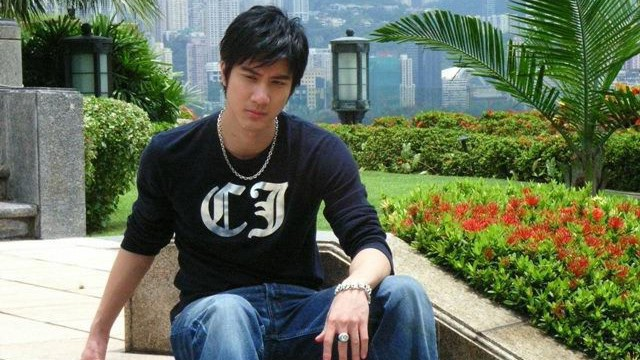
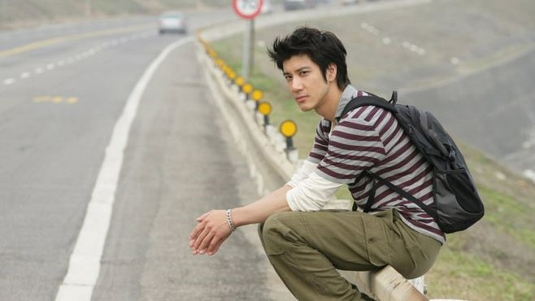
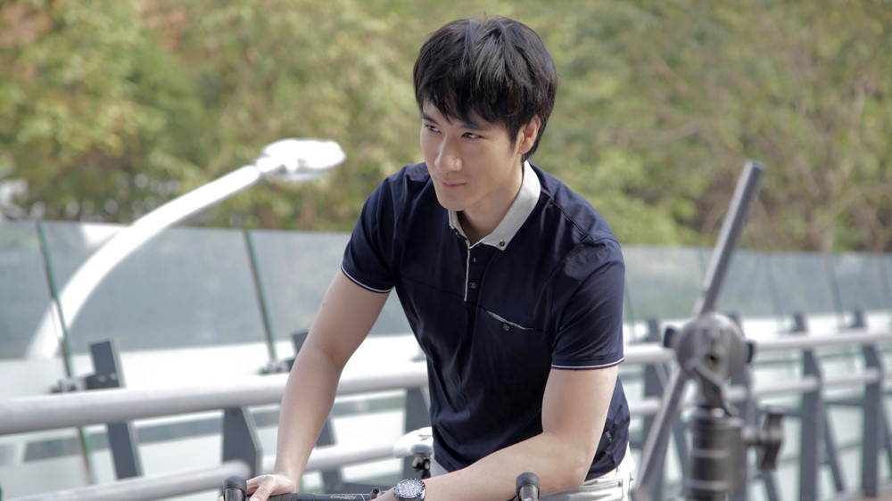

王力宏
英文名 Wang Leehom，1976年5月17日出生于美国纽约州罗切斯特市，祖籍浙江省义乌市，华语流行乐男歌手、音乐人、影视演员、导演，毕业于威廉姆斯学院，拥有威廉姆斯学院和伯克利音乐学院双荣誉博士的学历。
重要事件
- 1996年8月，发行创作专辑《如果你听见我的歌》，收录了其个人创作的六首歌曲。
- 1998年，离开福茂唱片公司，之后加入索尼唱片公司。他开始转型成为全创作歌手；同年，发行专辑《公转自转》。
- 2000年6月，推出专辑《永远的第一天》，该专辑是王力宏第一次独立完整制作的作品。
- 2001年9月，王力宏发行了融合摇滚﹑蓝调﹑嘻哈等曲风的专辑《唯一》，主打歌《唯一》是王力宏具有代表性的作品之一。
- 2007年9月26日，王力宏与梁朝伟、汤唯合作主演的剧情片《色·戒》在中国香港上映，他在片中饰演对汉奸极为愤恨的爱国青年邝裕民。
- 2008年4月17日，参与献唱北京奥运会倒计时100天主打歌《北京欢迎你》；9月19至20日，在台北小巨蛋举行MUSIC MAN世界巡回演唱会。
- 2012年1月22日，登上央视春晚舞台；9月17日，王力宏主演的爱情喜剧电影《非常幸运》在中国内地上映，他在片中饰演霸气中不乏帅气的特工大卫，并与章子怡演唱电影主题曲《爱一点》。
- 2014年，与瑞典电子音乐人艾维奇合作发行电子舞曲风格的单曲《忘我》；6月14日，在鸟巢举办“MUSIC-MAN II”火力全开演唱会。同年7月迎来了他的第一个女儿，取名王嘉莉。
- 2016年6月5日，王力宏获得威廉姆斯学院荣誉博士；11月，获得伯克利音乐学院荣誉博士。同年10月迎来了他的第二个女儿，取名王嘉娜。
- 2018年4月14日，“龙的传人2060”此次北京巡演日期恰好是妻子李靓蕾的生日。演唱会现场，王力宏宣布2018年夏天将迎来自己的第三个孩子。8月24日，宣布妻子李靓蕾诞下儿子，取名王嘉耀。
成就和荣誉
音乐类
- 1996年获得民生报十大偶像最佳新人奖
- 1999年获得Channel V 年度 Top20 歌曲奖、98年度十大唱片奖 、98年度十大歌曲奖新加坡金曲奖“年度最佳制作人奖”、第十届台湾金曲奖“最佳男演唱人”及“最佳专辑制作人奖”
- 2003年第三届全球华语歌曲榜，荣获“最受欢迎创作歌手”、华语流行乐传媒大奖2003年第4季，入围“最佳男艺人”
- 2006年第六届全球华语歌曲排行榜-[最佳制作人]、第17届金曲奖“最佳国语男演唱人”、2006亚洲MTV音乐大奖-台湾最受欢迎男歌手
- 2009年Music Radio中国TOP排行榜 - “最佳金曲-《心跳》”、“港台年度最佳制作人”、“港台年度最佳男歌手”、“音乐之声点播冠军奖”
- 2011年第1届全球流行音乐金榜 - Hit FM 推崇大奖、年度20大金曲奖(你不知道的事)、年度最佳作曲奖、年度最佳男歌手奖、第2届MY Astro 至尊流行榜颁奖典礼 - 海外至尊男歌手奖、至尊年度大奖、至尊制作人奖、至尊创作男歌手奖、至尊金曲奖(你不知道的事)、至尊金曲奖(伯牙绝弦)
- 2012年第14届Mnet Asian Music Award - 亚洲最佳艺人奖、第35届十大中文金曲颁奖音乐会 - 全国最佳男歌手
- 2016年1月13日(美东时间)王力宏获颁母校美国波士顿柏克利音乐学院（Berklee College of Music）荣誉博士学位，由校长布朗（Roger Brown）亲颁
影视类
- 2001年电影《雷霆战警》提名第20届香港电影金像奖最佳新人奖。
- 2011年电影《恋爱通告》获得第15届全球华语榜中榜最佳新锐导演和第23届哈尔滨冰雪电影节最具商业价值新导演
- 2017年《火力全开》获得第4届丝绸之路国际电影节最佳音乐纪录片
- 2018年电影《无问西东》获得第10届澳门国际电影节最佳男主角奖
荣誉类
2007年获得亚洲杰出艺人奖
主要作品
| 名称 | 发行日期 | 制作公司
|
|---|
| A.I. 爱 | 2017年12月19日 | HOMEBOY MUSIC |
| 你的爱。 | 2015年1月23日 | HOMEBOY MUSIC |
| 十八般武艺 | 2010年8月12日 | HOMEBOY MUSIC |
| 心·跳 | 2008年12月26日 | HOMEBOY MUSIC |
| 改变自己 | 2007年7月13日 | HOMEBOY MUSIC |
| 盖世英雄 | 2005年12月30日 | HOMEBOY MUSIC |
| 心中的日月 | 2004年12月31日 | HOMEBOY MUSIC |
| 不可思议 | 2003年10月15日 | HOMEBOY MUSIC |
| 唯一 | 2001年9月27日 | 台湾索尼音乐娱乐 |
| 永远的第一天 | 2000年6月5日 | 台湾索尼音乐娱乐 |
| 不可能错过你 | 1999年6月22日 | 台湾索尼音乐娱乐 |
| 公转自转 | 1998年8月21日 | 台湾索尼音乐娱乐 |
| 白纸 | 1997年7月18日 | 福茂音乐 |
| 好想你 | 1996年12月17日 | 福茂音乐 |
| 如果你听见我的歌 | 1996年8月7日 | 福茂音乐 |
| 情敌贝多芬 | 1995年12月1日 | 博德曼音乐 |
生活照



生平
家庭情况
王力宏的曾外祖父许凤藻是中国海军将领，奶奶许留芬毕业于清华大学经济系，担任过台北市商专会统科主任。王力宏的舅爷是史学家许倬云，毕业于台湾大学历史系。
王力宏的父亲王大中毕业于台湾大学医学系，母亲李明姝是台湾政治大学学士。
王力宏的哥哥王力德是耶鲁大学学士、芝加哥大学博士，大嫂Stacy是布朗大学学士、芝加哥大学硕士，弟弟王力凯和弟媳是麻省理工学院硕士。王力宏的表叔是歌手李建复，表哥、表嫂毕业于哈佛大学。
感情生活
2013年11月27日，王力宏与哥伦比亚大学研究生李靓蕾登记结婚。2014年5月18日，王力宏宣布李靓蕾怀孕 ；7月9日，王力宏的女儿王嘉莉出生。2016年2月17日，王力宏证实妻子李靓蕾怀了第二胎。10月7日，王力宏妻子李靓蕾在美国生下女儿，取名王嘉娜。
2018年4月14日，“龙的传人2060”此次北京巡演日期恰好是妻子李靓蕾的生日。演唱会现场，王力宏宣布2018年夏天将迎来自己的第三个孩子。8月24日，宣布妻子李靓蕾诞下儿子，取名王嘉耀。
个人学历
2016年6月5日，王力宏获得威廉姆斯学院荣誉博士；11月，获得伯克利音乐学院荣誉博士。